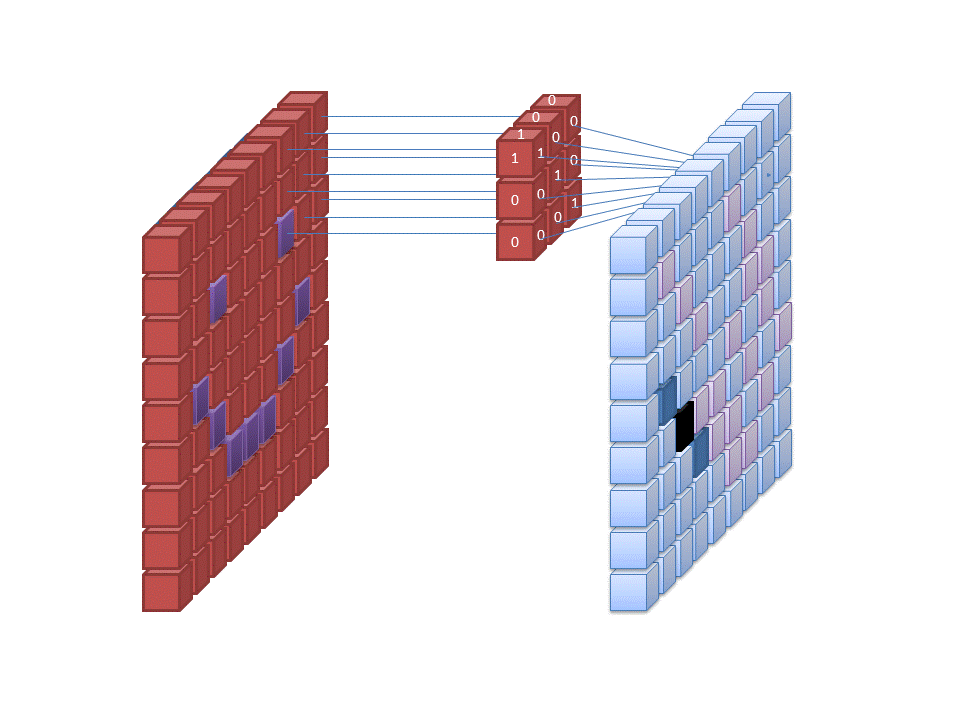
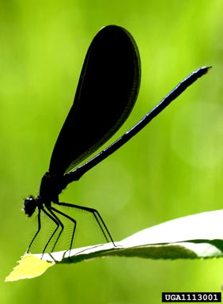
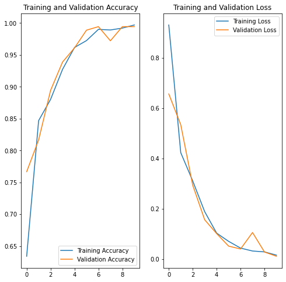

Deep learning for insects images classification

How the neural network classified the images
Image classification means that we use artificial intelligence (here we use deep learning) to automatically identify objects, people in images, and classify it to different labels.
Images are composed of pixels, and these are the features of the images. Colors could be represented as RGB values (a combination of red, green and blue ranging from 0 to 255). When computer load images, it first convert images into arrays.
Neural network (especially in deep learning) has multiple layers. The first layer usually takes in all the pixels within an image. And then, different filters are applied to the image.

Credit: commons.wikimedia.org
We use a “convolutional layer” to extracting features from images, that where we have the commonly used term Convolutional Neural Network (CNN) in image classification.

Credit: commons.wikimedia.org
After we extract information from the convolutional layer, we will apply a pooling layer to the matrix. The main idea of “pooling” is to drop out redundant information and avoid overfitting.

The final layer before output is usually a dense layer or a fully connected layer, which is a linear operation on the layer’s input vector.

Credit to: Stanford CS class
An example based on insects images
Train a deep learning model to classify beetles, cockroaches and dragonflies using these images( https://www.dropbox.com/s/fn73sj2e6c9rhf6/insects.zip?dl=0). Note: Original images from https://www.insectimages.org/index.cfm.
Explore the dataset
# Importing all necessary libraries
import matplotlib.pyplot as plt
import numpy as np
import os
import PIL
import tensorflow as tf
from tensorflow import keras
from tensorflow.keras import layers
from tensorflow.keras.models import Sequential
import pathlib
data_train_dir = pathlib.Path('insects\\train')
data_test_dir = pathlib.Path('insects\\test')
data_train_dir
WindowsPath('C:/your_path/insects/train')
image_count = len(list(data_train_dir.glob('*/*.jpg')))
print(image_count)
1019
image_count = len(list(data_test_dir.glob('*/*.jpg')))
print(image_count)
180
There are 1019 figures for training and 180 figures for testing.
Let’s take a look at the a sample figure.
dragonflies = list(data_train_dir.glob('dragonflies/*'))
PIL.Image.open(str(dragonflies[0]))

Load using keras.preprocessing
img_width, img_height = 256, 224
batch_size = 32
train_ds = tf.keras.preprocessing.image_dataset_from_directory(
data_train_dir,
image_size=(img_height, img_width),
batch_size=batch_size)
Found 1019 files belonging to 3 classes.
val_ds = tf.keras.preprocessing.image_dataset_from_directory(
data_test_dir,
image_size=(img_height, img_width),
batch_size=batch_size)
Found 180 files belonging to 3 classes.
class_names = train_ds.class_names
print(class_names)
['beetles', 'cockroach', 'dragonflies']
for image_batch, labels_batch in train_ds:
print(image_batch.shape)
print(labels_batch.shape)
break
(32, 224, 256, 3)
(32,)
The image_batch is a tensor of the shape (32, 224, 256, 3). This is a batch of 32 images of shape 224x256x3
Standardize the data
normalization_layer = layers.experimental.preprocessing.Rescaling(1./255)
normalized_ds = train_ds.map(lambda x, y: (normalization_layer(x), y))
image_batch, labels_batch = next(iter(normalized_ds))
first_image = image_batch[0]
# Notice the pixels values are now in `[0,1]`.
print(np.min(first_image), np.max(first_image))
0.0 0.9191305
Create the model
num_classes = 3
model = Sequential([
layers.experimental.preprocessing.Rescaling(1./255, input_shape=(img_height, img_width, 3)),
layers.Conv2D(16, 3, padding='same', activation='relu'),
layers.MaxPooling2D(),
layers.Conv2D(32, 3, padding='same', activation='relu'),
layers.MaxPooling2D(),
layers.Conv2D(64, 3, padding='same', activation='relu'),
layers.MaxPooling2D(),
layers.Flatten(),
layers.Dense(128, activation='relu'),
layers.Dense(num_classes)
])
I choose the optimizers.Adam optimizer and losses.SparseCategoricalCrossentropy loss function.
model.compile(optimizer='adam',
loss=tf.keras.losses.SparseCategoricalCrossentropy(from_logits=True),
metrics=['accuracy'])
model.summary()
Model: "sequential"
_________________________________________________________________
Layer (type) Output Shape Param #
=================================================================
rescaling_1 (Rescaling) (None, 224, 256, 3) 0
_________________________________________________________________
conv2d (Conv2D) (None, 224, 256, 16) 448
_________________________________________________________________
max_pooling2d (MaxPooling2D) (None, 112, 128, 16) 0
_________________________________________________________________
conv2d_1 (Conv2D) (None, 112, 128, 32) 4640
_________________________________________________________________
max_pooling2d_1 (MaxPooling2 (None, 56, 64, 32) 0
_________________________________________________________________
conv2d_2 (Conv2D) (None, 56, 64, 64) 18496
_________________________________________________________________
max_pooling2d_2 (MaxPooling2 (None, 28, 32, 64) 0
_________________________________________________________________
flatten (Flatten) (None, 57344) 0
_________________________________________________________________
dense (Dense) (None, 128) 7340160
_________________________________________________________________
dense_1 (Dense) (None, 3) 387
=================================================================
Total params: 7,364,131
Trainable params: 7,364,131
Non-trainable params: 0
_________________________________________________________________
Train the model
epochs=10
history = model.fit(
train_ds,
validation_data=val_ds,
epochs=epochs
)
Epoch 1/10
32/32 [==============================] - 36s 1s/step - loss: 0.9313 - accuracy: 0.6340 - val_loss: 0.6570 - val_accuracy: 0.7667
Epoch 2/10
32/32 [==============================] - 37s 1s/step - loss: 0.4232 - accuracy: 0.8469 - val_loss: 0.5344 - val_accuracy: 0.8167
Epoch 3/10
32/32 [==============================] - 36s 1s/step - loss: 0.3108 - accuracy: 0.8803 - val_loss: 0.2941 - val_accuracy: 0.8944
Epoch 4/10
32/32 [==============================] - 35s 1s/step - loss: 0.1886 - accuracy: 0.9274 - val_loss: 0.1562 - val_accuracy: 0.9389
Epoch 5/10
32/32 [==============================] - 36s 1s/step - loss: 0.1031 - accuracy: 0.9617 - val_loss: 0.1012 - val_accuracy: 0.9611
Epoch 6/10
32/32 [==============================] - 36s 1s/step - loss: 0.0704 - accuracy: 0.9725 - val_loss: 0.0514 - val_accuracy: 0.9889
Epoch 7/10
32/32 [==============================] - 37s 1s/step - loss: 0.0435 - accuracy: 0.9902 - val_loss: 0.0399 - val_accuracy: 0.9944
Epoch 8/10
32/32 [==============================] - 38s 1s/step - loss: 0.0319 - accuracy: 0.9892 - val_loss: 0.1055 - val_accuracy: 0.9722
Epoch 9/10
32/32 [==============================] - 38s 1s/step - loss: 0.0284 - accuracy: 0.9921 - val_loss: 0.0279 - val_accuracy: 0.9944
Epoch 10/10
32/32 [==============================] - 39s 1s/step - loss: 0.0155 - accuracy: 0.9971 - val_loss: 0.0109 - val_accuracy: 0.9944
Visualize training results
acc = history.history['accuracy']
val_acc = history.history['val_accuracy']
loss = history.history['loss']
val_loss = history.history['val_loss']
epochs_range = range(epochs)
plt.figure(figsize=(8, 8))
plt.subplot(1, 2, 1)
plt.plot(epochs_range, acc, label='Training Accuracy')
plt.plot(epochs_range, val_acc, label='Validation Accuracy')
plt.legend(loc='lower right')
plt.title('Training and Validation Accuracy')
plt.subplot(1, 2, 2)
plt.plot(epochs_range, loss, label='Training Loss')
plt.plot(epochs_range, val_loss, label='Validation Loss')
plt.legend(loc='upper right')
plt.title('Training and Validation Loss')
plt.show()

The model achieved quite high accuracy (99.44%).
Save the model
model.save_weights('model_saved.h5')
Reference
1.https://www.tensorflow.org/tutorials/images/classification
2.https://stackabuse.com/image-recognition-in-python-with-tensorflow-and-keras/
3.https://cs231n.github.io/neural-networks-1/
4.http://deeplearning.stanford.edu/tutorial/supervised/Pooling/